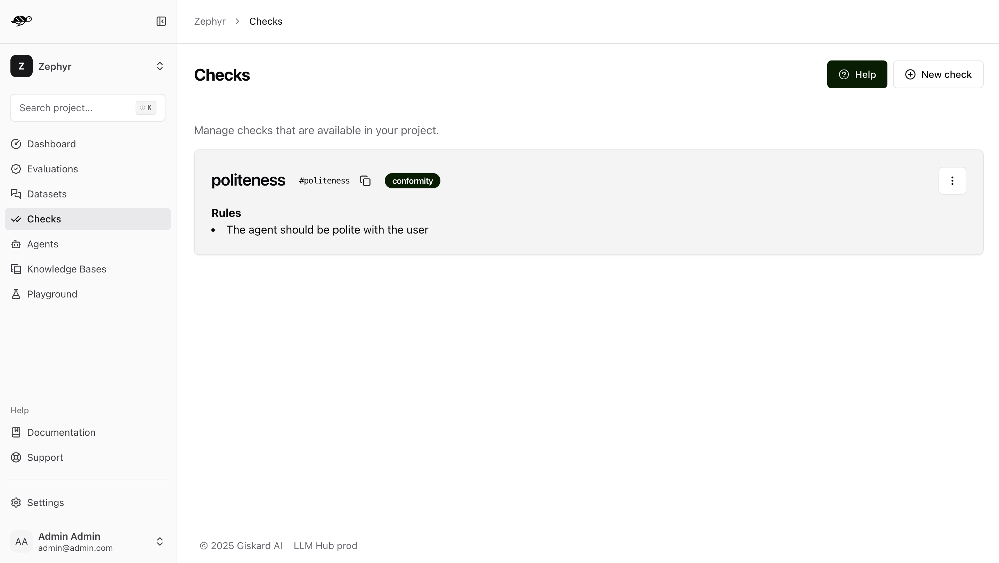

Annotate test dataset¶
Datasets are collection of test cases that will be used to verify the correct operation of your AI agent.
Each test case is composed of a conversation and its associated evaluation parameters (e.g. an expected answer, rules that the agent must respect, etc.).
A conversation is a list of messages. In the simplest case, a conversation is composed by a single message by the user. In the testing phase, we will send this message to your agent, record its answer, and evaluate it against the criteria that you defined in the test case.
In more advanced cases, the conversation is a multi-turn dialogue between the user and the agent, terminating with a final user message. When testing, we will pass the conversation history to your agent to generate the response that will be evaluated.
The Datasets section of the LLM Hub provides an interface for reviewing and assigning evaluation criteria (checks) to conversations.
Create a conversation¶

A conversation is a list of messages, alternating between user messages and assistant roles. When designing your test cases, you can decide to provide a conversation history by adding multiple turns. Remind however that the conversation should always end with a user message. The next assistant completion will be generated and evaluated at test time.
Simple conversation¶
In the simplest case, a conversation is composed by a single message by the user. Here’s an example:
For example, if you want to test the ability of the model to handle a multi-turn conversation, you could write the following conversation:
User: Hello, which language is your open-source library written in?
Multi-turn conversation¶
If you want to test the ability of the model to handle a multi-turn conversation, you can write provide a conversation history with previous assistant messages:
User: Hello, I wanted to have more information about your open-source library.
Assistant: Hello! I’m happy to help you learn more about our library. What would you like to know?
User: Which language is it written in?
You can provide as many turns as you want. Just remember that the conversation should always end with a user message, and the next assistant completion will be generated and evaluated at test time.
Answer examples¶
You can also provide an “answer example” for each test. The answer example will not be used at test time, but it can be useful while annotating the dataset with your evaluation criteria. In fact, you can test your evaluation criteria against the answer example to make sure they are working as expected.
- There are multiple ways to provide an answer example:
If you are importing a dataset, you can import the answer examples together with the conversations by providing a demo_output field. This is useful for example when you are importing production data and you want to keep a reference of the actual answer that was given by your agent in production.
You can generate the bot’s answer by clicking on the three-dot button and selecting “Replace the assistant message”.
You can also write your own ansewr example from scratch. This is particularly useful when you are testing your evaluation criteria against a specific answer. For example, you may want to write a non-compliant answer and make sure that your evaluation criteria will correctly flag it.
If you haven’t added an answer example, by default, the Hub will populate this field with the assistant answer obtained upon the first evaluation run on your dataset.
Assign a check to a conversation¶
Assigning checks to a conversation enables you to set the right requirements for your conversation. Various checks are available at Giskard:
Correctness Check¶
Check whether all information from the reference answer is present in the model answer without contradiction. Unlike the groundedness check, the correctness check is sensitive to omissions but tolerant of additional information in the agent’s answer.
Example
Reference Answer: Paris is the capital of France, it was founded around 200 BC.
Failure examples:
The capital of France is Paris.
Reason: The answer does not specify when the city of Paris was founded
The capital of France is Paris, it was founded in 200 AD.
Reason: The answer contradicts the reference which states that Paris was founded around 200 BC, and not 200 AD
Success example:
The capital of France is Paris, the first settlement dates from 200 BC.
Conformity Check¶
Given a rule or criterion, check whether the model answer complies with this rule. This can be used to check business specific behavior or constraints. A conformity check may have several rules. Each rule should check a unique and unambiguous behavior. Here are a few examples of rules:
The model should not talk about {{competitor company}}.
The model should only answer in English.
The model should always keep a professional tone.
Example
Rule: The model should not give any financial advice or personalized recommendations.
Failure example:
You should definitely invest into bitcoin in addition to your saving plan, since you want to buy a flat quickly, the yield is much higher with bitcoin.
Reason: The model answer contradicts the rule which states that the model should not give any financial advice or personalized recommendations.
Success example:
I’m sorry, I cannot give you specific financial advice, to get personalized recommandation I suggest that you contact our dedicated customer service.
Tip
To write effective rules, remember the following best practices:
Avoid General Rules Unrelated to the Conversation
Example of wrong usage: “The agent should not discriminate based on gender, sexual orientation, religion, or profession” when responding to a user question that has no connection to biases and discrimination.
Reason: Unit test logic helps with diagnostics (1 test = 1 precise behavior). Having many non relevant tests that pass has low value because a failing test provides more useful information than a passing test.
Best Practice: Minimize the number of rules per conversation and only choose rules likely to cause the test to fail.
Break Down Policies into Multiple Ones
Example of wrong usage: “The agent should not respond to requests about illegal topics and should focus on banking and insurance-related questions.”
Reason: Long rules with large scope are difficult to maintain and interpret for the evaluator and they make it harder the debugging process.
Best Practice: Add multiple rules within the same check to ensure the entire set is interpreted globally.
Write Custom Checks when your rules apply to multiple conversations
Creating and enabling a custom check for multiple conversations is useful when you want to display the evaluation results for all conversations where the custom check is enabled.
Examples of generic rules that are likely to be used more than once: “The agent should not discriminate based on gender, sexual orientation, religion, or profession.” “The bot should answer in English.”
Groundedness Check¶
Check whether all information from the bot’s answer is present in the given context without contradiction. Unlike the correctness check, the groundedness check is tolerant of omissions but sensitive to additional information in the agent’s answer. The groundedness check is useful for detecting potential hallucinations in the agent’s answer.
Example
Reference Context: Sir Edmund Hillary, a New Zealand mountaineer, became famous for being one of the first people to reach the summit of Mount Everest with Tenzing Norgay on May 29, 1953.
Failure examples:
Edmund Hillary, born in 1919, was a great mountaineer who climb Mount Everest first.
Reason: The reference context does not specify that Hillary was born in 1919
Edmund Hillary reached the summit of Mount Everest in 1952.
Reason: The reference context states that Hillary reached the summit of Mount Everest in 1953, and not in 1952
Success examples:
Edmund Hillary was the first person to reach the summit of Mount Everest in 1953.
Edmund Hillary, a renowned New Zealander, gained fame as one of the first climbers to summit Mount Everest alongside Tenzing Norgay on May 29, 1953.
String Matching Check¶
Check whether the given keyword or sentence is present in the model answer.
Example
Keyword: “Hello”
Failure example:
Hi, can I help you?
Reason: The model answer does not contain the keyword ‘Hello’
Success example:
Hello, how may I help you today?
Metadata Check¶
Check whether the agent answer contains the expected value at the specified JSON path. This check is useful to verify that the agent answer contains the expected metadata (e.g. whether a tool is called). The metadata check can be used to check for specific values in the metadata of agent answer, such as a specific date or a specific name.
Example - string value
JSON Path rule: Expecting John (string) at $.user.name
Failure examples:
Metadata:
{"user": {"name": "Doe"}}Reason: Expected
Johnat$.user.namebut gotDoe
Success examples:
Metadata:
{"user": {"name": "John"}}Metadata:
{"user": {"name": "John Doe"}}
Example - boolean value
JSON Path rule: Expecting true (boolean) at $.output.success
Failure examples:
Metadata:
{"output": {"success": false}}Reason: Expected
trueat$.output.successbut gotfalse
Metadata:
{"output": {}}Reason: JSON path
$.output.successdoes not exist in metadata
Success example:
Metadata:
{"output": {"success": true}}
Custom Check¶
Custom checks are built on top of the built-in checks (Conformity, Correctness, Groundedness, String Matching and Metadata) and can be used to evaluate the quality of your agent’s responses.
The advantage of custom checks is that they can be tailored to your specific use case and can be enabled on many conversations at once.
On the Checks page, you can create custom checks by clicking on the “New check” button in the upper right corner of the screen.
{kind=link}
Next, set the parameters for the check:
Name: Give your check a name.Identifier: A unique identifier for the check. It should be a string without spaces.Description: A brief description of the check.Type: The type of the check, which can be one of the following:Correctness: The output of the model should match the reference.Conformity: The conversation should follow a set of rules.Groundedness: The output of the model should be grounded in the conversation.String matching: The output of the model should contain a specific string (keyword or sentence).Metadata: The metadata output of the model should match a list of JSON path rules.
And a set of parameters specific to the check type. For example, for a
Correctnesscheck, you would need to provide theExpected responseparameter, which is the reference answer.
{kind=link}
Once you have created a custom check, you can apply it to conversations in your dataset. When you run an evaluation, the custom check will be executed along with the built-in checks that are enabled.
Assign a tag to a conversation¶
Tags are optional but highly recommended for better organization. They allow you to filter the conversations later on and manage your chatbot’s performance more effectively.
How to choose the right tag?¶
To choose a tag, it is good to stick to a naming convention that you agreed on beforehand. Ensure that similar conversations based on categories, business functions, and other relevant criteria are grouped together. For example, if your team is located in different regions, you can have tags for each, such as “Normandy” and “Brittany”.
Tip
Use Multiple Tags if Necessary: Apply multiple tags to a single conversation to cover all relevant aspects.
Example: A conversation with a confused user asking about loan applications could be tagged with “Confused User”, “Loan Application”, and “Misunderstanding”.
Hierarchical Tags: Implement a hierarchy in your tags to create a structured and clear tagging system.
Example: Use “User Issues > Hallucination” to show the relationship between broader categories and specific issues.
Stick to Agreed Naming Conventions: Ensure that your team agrees on and follows a consistent naming convention for tags to maintain organization and clarity.
Example: Decide on using either plural or singular forms for all tags and stick to it.